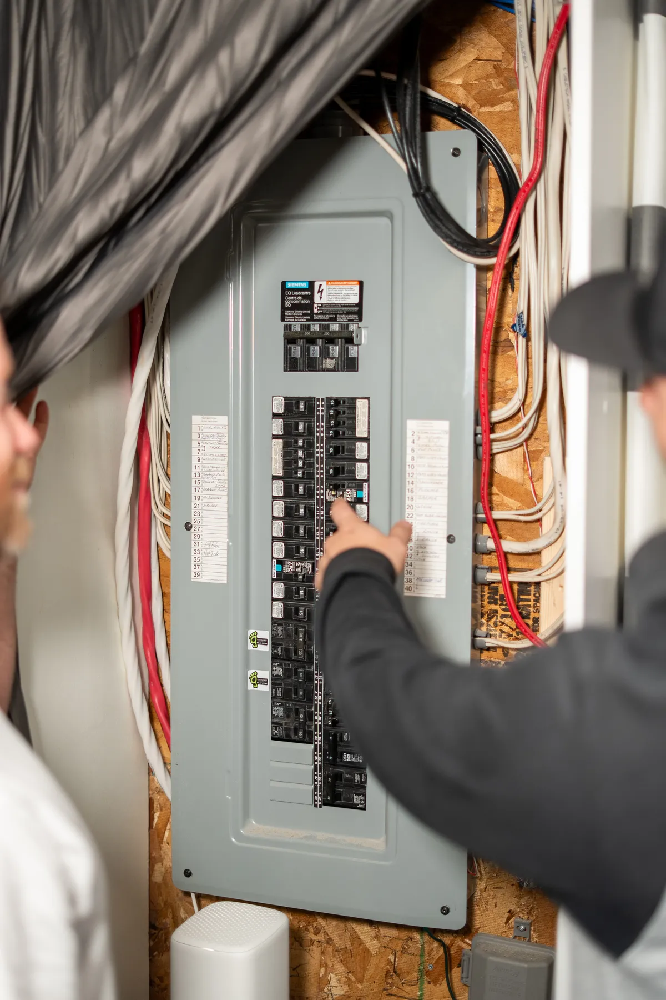

Ça commence souvent par un petit détail. Une lumière qui clignote quand la sécheuse démarre. Un disjoncteur qui saute chaque fois qu’on branche la chaufferette. Une prise qui semble un peu chaude.
C’est facile de remettre ça à plus tard. Mais les problèmes électriques se règlent rarement d’eux-mêmes, et le câblage derrière vos murs est la seule partie de votre maison que vous ne voyez pas avant que quelque chose tourne mal.
C’est là qu’un électricien agréé entre en jeu. Voici pourquoi c’est important pour les propriétaires de Moncton et de partout à l’Î.-P.-É., et à quoi vous attendre quand un de nos techniciens arrive chez vous.
Les signes qu’il est temps d’appeler un électricien
Quand le temps se refroidit et que les chaufferettes, les mijoteuses et les lumières des Fêtes sortent, votre système électrique travaille plus fort. Appelez un pro si vous remarquez :
- Des lumières qui clignotent ou baissent quand un appareil se met en marche
- Des disjoncteurs qui sautent à répétition
- Des prises ou des interrupteurs chauds, qui bourdonnent ou qui sont décolorés
- Une odeur de brûlé près d’une prise, d’un interrupteur ou de votre panneau électrique
- Des prises ou des circuits qui ne fonctionnent plus
- Vous ajoutez un gros appareil, comme une borne de recharge de niveau 2, un spa ou un nouvel électroménager
Si vous sentez une odeur de brûlé ou voyez de la fumée ou des étincelles, n’attendez pas un rendez-vous. Faites sortir tout le monde et composez le 911.
Pourquoi « je vais le faire moi-même » peut vous coûter plus cher
Changer un interrupteur a l’air simple dans une vidéo. Ce que la vidéo ne montre pas, c’est ce qu’il y a dans votre mur : du vieux câblage, un circuit surchargé ou une connexion mal faite il y a des années.
Un électricien agréé est formé pour trouver ces problèmes, pas seulement le symptôme. Il travaille selon le Code canadien de l’électricité et sait comment il s’applique dans votre province.
Les permis comptent aussi. Au Nouveau-Brunswick, seuls les entrepreneurs électriciens agréés peuvent demander un permis de câblage, et travailler sans le permis requis entraîne des frais d’inspection spéciale. À l’Î.-P.-É., un permis est exigé pour tous les travaux électriques, et seuls les entrepreneurs agréés peuvent le demander.
Des travaux faits sans permis peuvent vous rattraper plus tard, que ce soit un inspecteur, votre assureur ou l’inspecteur en bâtiment d’un acheteur au moment de vendre. Quand c’est nous qui faisons le travail, le permis, c’est notre affaire.
À quoi ressemble un appel de service LuMar
Chaque maison est différente, mais chaque appel de service suit les trois mêmes étapes.
Dites-nous ce qui se passe. Appelez-nous ou réservez en ligne en une minute environ. Décrivez le problème et nous vous inscrivons à l’horaire. Ensuite, nous arrivons quand nous l’avons dit, dans une camionnette LuMar identifiée, avec les outils qu’il faut.

Nous évaluons et soumissionnons. Un électricien agréé examine le travail et vous explique ce qu’il faut faire et ce que ça coûte, pour que vous décidiez avant qu’on commence. Un disjoncteur qui saute peut venir d’un circuit surchargé, d’un appareil défectueux ou d’un problème de câblage : nous cherchons la vraie cause, pas seulement le symptôme.


Nous faisons le travail comme il faut. Un travail conforme au code par une équipe certifiée COR®, les lieux remis en ordre à notre départ, appuyé par notre garantie de satisfaction à 100 %.

Les appels de service les plus courants à Moncton et à l’Î.-P.-É.
Notre équipe Service et entretien répond aux appels résidentiels et commerciaux, notamment :
- Le dépannage de lumières qui clignotent, de disjoncteurs qui sautent et de pannes de courant
- La réparation ou le remplacement de prises, d’interrupteurs, de câblage et de circuits
- La mise à niveau de panneaux et la réparation de disjoncteurs
- L’installation de bornes de recharge de niveau 2
- La réparation d’éclairage et la conversion au DEL, à l’intérieur comme à l’extérieur
- Les interrupteurs intelligents et la domotique avec SmartSpace
- L’entretien préventif et les inspections électriques
Vous pensez déjà aux lumières des Fêtes de l’an prochain? Inscrivez-vous à notre liste prioritaire 2027 pour l’éclairage extérieur permanent.

Pourquoi les propriétaires font appel à LuMar
- Entreprise locale depuis 2011
- Agréée et assurée au Nouveau-Brunswick et à l’Î.-P.-É.
- Certifiée COR® en santé et sécurité
- Notée 4,9 sur 5 selon 91 avis vérifiés
- Appuyée par notre garantie de satisfaction à 100 %
- Financement offert pour les plus gros projets
Questions fréquentes
Puis-je faire mes propres travaux électriques au Nouveau-Brunswick ou à l’Î.-P.-É.?
Dans les deux provinces, les permis électriques sont demandés par des entrepreneurs électriciens agréés, et l’Î.-P.-É. exige un permis pour tous les travaux électriques. Pour tout ce qui touche votre câblage ou votre panneau, appelez un électricien agréé. Pour vos questions sur les règles, communiquez avec les Services d’inspection technique au Nouveau-Brunswick ou les Services d’inspection à l’Î.-P.-É.
Quelles régions desservez-vous?
Moncton, Dieppe et le sud-est du Nouveau-Brunswick, ainsi que Charlottetown et toute l’Île-du-Prince-Édouard. Nos bureaux sont sur le croissant Rooney à Moncton et sur l’avenue Frizzell à Charlottetown.
Quand puis-je réserver un appel de service?
Notre bureau est ouvert du lundi au jeudi de 7 h 00 à 16 h 30, et le vendredi de 7 h 00 à 13 h 30. Vous pouvez aussi réserver en ligne en tout temps.
Combien coûte un appel de service?
Chaque travail est différent. Un électricien agréé examine le travail et vous explique ce qu’il faut faire et ce que ça coûte, pour que vous décidiez avant qu’on commence. Les estimations sont gratuites.
Réservez un appel de service
Une lumière qui clignote depuis des semaines, ou un disjoncteur qui ne tient plus? Appelez-nous.
- Moncton et les environs : 506-389-2393
- Charlottetown et l’Î.-P.-É. : 782-377-8509
Ou obtenez une estimation GRATUITE et nous vous répondrons rapidement.
 Certifiés en sécurité
Certifiés en sécurité